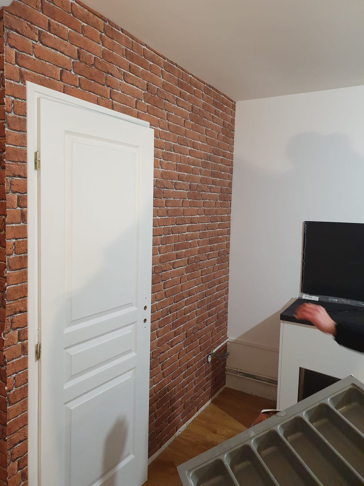

Prestations / Peinture extérieure et façades
Peinture extérieure et façades
Murs de cour, façades sur rue, ferronneries et menuiseries. Le support commande tout le reste.

Ce que nous réalisons
Extérieur, cours et ferronneries
Ce que nous traitons en extérieur
- Peinture de façades et de murs de cour, en revêtement microporeux ou pliolite selon le support.
- Traitement préalable : lavage haute pression, brossage, traitement antimousse, réparation des épaufrures, rebouchage des fissures.
- Ferronneries : garde-corps, grilles, portails, escaliers de service, avec traitement antirouille.
- Menuiseries extérieures bois et métal, volets, portes d'entrée.
- Sous-faces de balcon, plafonds de porche, cages d'escalier ouvertes.
Nous ne réalisons pas de ravalement structurel, ni d'enduit de façade sur échafaudage de grande hauteur. Sur un immeuble entier soumis à ravalement obligatoire, c'est une entreprise de façade qu'il vous faut, et nous vous le dirons.
À prévoir
Accès, saison, autorisations
Trois choses à anticiper
L'accès. Échafaudage, nacelle ou échelle changent complètement le budget. Sur voie publique parisienne, l'occupation du domaine public demande une autorisation et se facture à la journée.
La saison. Une peinture extérieure ne s'applique ni sous 5 °C, ni sous la pluie, ni en plein soleil d'août. La fenêtre utile va d'avril à octobre.
La copropriété. En immeuble, la façade et souvent les garde-corps sont des parties communes. Une décision d'assemblée générale est nécessaire. Nous fournissons le devis au format attendu par votre syndic.
Prix indicatifs
Fourchettes 2026, hors accès
Combien ça coûte
| Prestation | Prix HT |
|---|---|
| Peinture de façade ou mur de cour, hors accès | 35 à 60 €/m² |
| Préparation : lavage, traitement antimousse, rebouchage | 12 à 28 €/m² |
| Ferronneries, traitement antirouille et 2 couches | 45 à 90 €/m² |
| Volets et menuiseries extérieures bois | 180 à 320 €/vantail |
| Échafaudage, montage et location mensuelle | 18 à 35 €/m² |
| Autorisation d'occupation du domaine public | selon tarif Ville de Paris |
L'accès représente souvent 30 à 40 % du budget d'un chantier extérieur. C'est le premier poste à arbitrer, avant même le choix de la peinture.
Prix indicatifs, hors fourniture lorsque précisé. TVA à 10 % pour les logements achevés depuis plus de deux ans. Chaque chantier fait l'objet d'un devis détaillé après visite technique gratuite.
Questions fréquentes
4 réponses
Questions fréquentes
Quelle est la durée de vie d'une peinture de façade ?
Huit à quinze ans selon l'exposition, la qualité du support et le produit. Une façade nord humide se dégrade plus vite qu'une façade sud abritée.
Faut-il l'accord de la copropriété ?
Pour une façade sur rue ou une cour commune, oui, par décision d'assemblée générale. Pour un balcon privatif, cela dépend du règlement de copropriété.
Intervenez-vous en hiver ?
Pas en peinture extérieure sous 5 °C ni par temps humide. Nous réservons l'hiver aux chantiers intérieurs et nous planifions l'extérieur d'avril à octobre.
Faites-vous le ravalement complet d'un immeuble ?
Non. Nous faisons de la peinture extérieure sur des surfaces accessibles. Un ravalement au titre de l'obligation décennale parisienne relève d'une entreprise de façade spécialisée.
Voir aussi : peinture intérieure · vitrerie · peintures décoratives
Passer à l'action
Réponse sous 24 h
Parlons de votre projet
Visite technique gratuite, devis détaillé sous 48 heures, dans l'est parisien et à Paris.